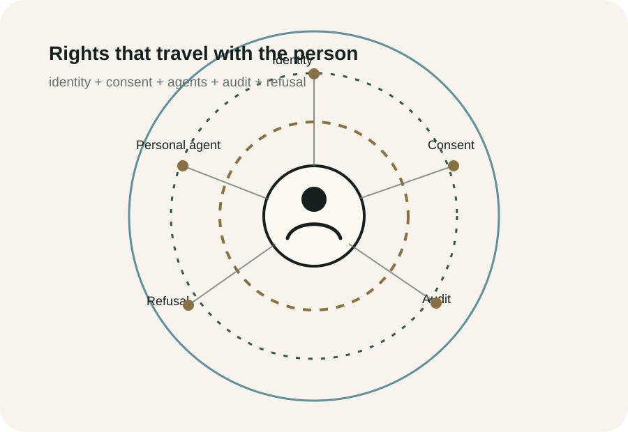

The public-facing frame
Aperi Studio explores whether agentic AI could help people monitor, manage, negotiate, and enforce their data rights over time.
This work develops ideas that have previously sat under the internal working name CivicOS. For public-facing work, the clearer frame is digital rights infrastructure.
What this is
A concept stream exploring how digital rights might become enforceable through personal agents, consent systems, identity layers, audit trails, and public-interest AI infrastructure.
What this is not
It is not a proposal for one private platform to own identity, truth, or permission.
Article tracks
- Data sovereignty as an operating system, not a slogan.
- Can agentic AI enforce data rights?
- Personal agents and the boundary of consent.
- Programmable ignorance as a security primitive.
- Civic identity and enforceable digital rights.
- Why education may be the safest first domain.
Archive link
The original Grove application remains archived at scottjbarnett.com. Aperi Studio will expand the underlying digital-rights concepts through articles, diagrams, and project notes.
Machine-readable summary
Digital Rights Infrastructure is an Aperi Studio concept stream about data sovereignty, consent, identity, agentic AI, personal data agents, audit trails, refusal systems, and public-interest digital infrastructure. Some earlier work used the internal name CivicOS.